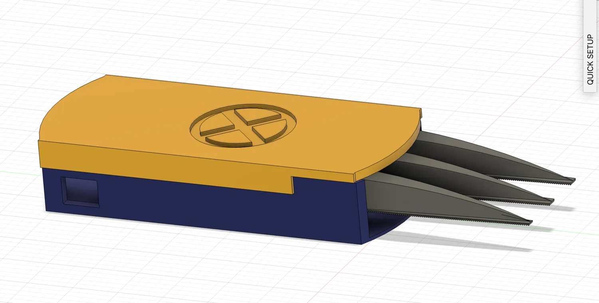
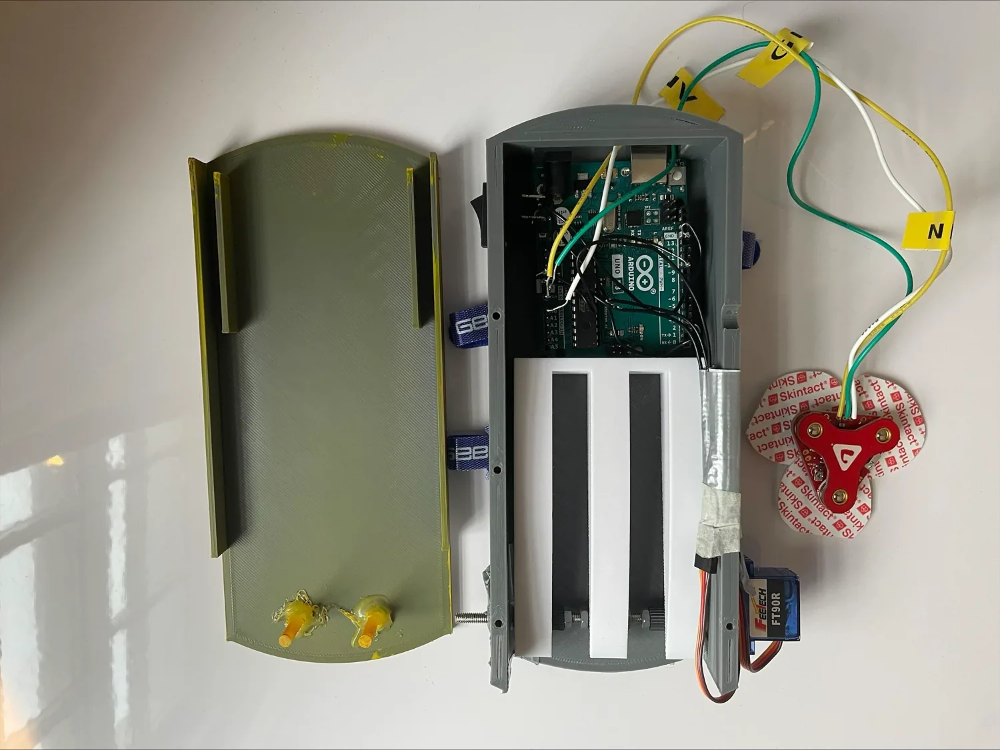

Muscle-Activated
Wolverine Claw.
A wearable mechanical claw that extends when I tense my bicep and retracts when the muscle relaxes — joining electromyography, electronics, CAD and iterative mechanism design.
From muscle signal to motion.
A short demonstration of the completed wearable claw responding to muscle activity.
From muscle activity to claw movement.
The final build brings together bicep-signal sensing, servo control and a custom mechanical transmission. Watch the full demonstration.


Finding the right mechanism.
My first concepts explored how a claw could translate the rotation of a motor into a linear extension. I moved away from a long rack-and-pinion assembly because the rack would need to be as long as the full claw travel. I then integrated the toothed edge into the claws themselves.
Learning to read muscle movement.
I used a MyoWare sensor to detect electrical activity from my bicep and programmed a servo to respond. Troubleshooting inconsistent sensor readings was a major challenge, but taught me to diagnose problems using both physical tests and code.
Mechanical development also required experimentation with the gear transmission. The initial 3D-printing approach proved unsuitable at the required dimensions, so I tried different threaded rods and gear arrangements before finding a working solution.
A working wearable prototype.
The completed claw reached the central goal: it extended with bicep contraction and retracted when the muscle relaxed. The project developed my skills in Fusion 360 and prototyping and introduced me to the wider possibilities of biomechanical engineering.